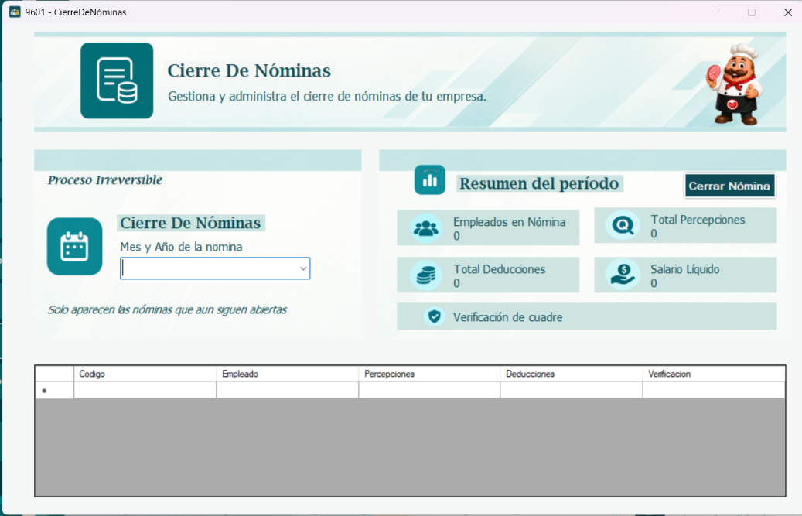
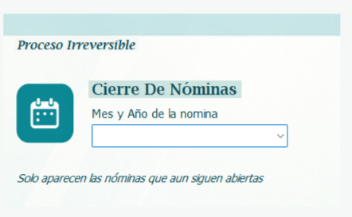
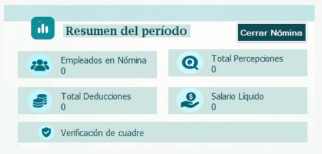
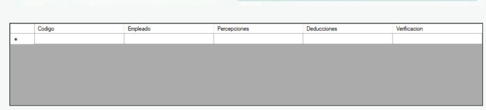
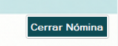

La ventana de Cierre de Nóminas permite cerrar el período de nómina una vez que ha sido revisado y pagado. Al cerrarlo, la información del período queda bloqueada y garantiza la integridad de los datos de la empresa.
Por ejemplo, al cerrar la nómina de octubre, ya no se podrán modificar los registros de ese mes. Este proceso es irreversible.

En la sección Cierre De Nóminas, despliegue la lista Mes y Año de la nómina y seleccione el período que desea cerrar. En la lista solo aparecen las nóminas que aún siguen abiertas; los períodos ya cerrados no se muestran.
Recuerde que en la parte superior de esta sección se muestra el aviso Proceso Irreversible, para que tenga presente que el cierre no se puede deshacer.

Al seleccionar el período, la sección Resumen del período muestra los totales de la nómina para que pueda revisarlos antes de cerrar:
Empleados en Nómina: cantidad de empleados incluidos en el período.
Total Percepciones: suma de todo lo devengado por los empleados.
Total Deducciones: suma de todos los descuentos aplicados.
Salario Líquido: monto neto a pagar (percepciones menos deducciones).
Verificación de cuadre: indica si los totales de la nómina cuadran correctamente.

En la tabla inferior se muestra el detalle del período seleccionado, con una fila por empleado: código, nombre del empleado, percepciones, deducciones y verificación. Revise esta información antes de proceder con el cierre.

Cuando haya revisado el resumen y el detalle, presione el botón Cerrar Nómina.
Atención: esta es una acción irreversible y no se puede deshacer. Al cerrar la nómina:
• Se bloquearán las nóminas del período que seleccionó y no serán editables.
• Si existe un descuadre, no podrá ser editado en el período cerrado; será ajustado en el siguiente período.
Verifique con cuidado que el período seleccionado y sus totales sean correctos antes de confirmar.
